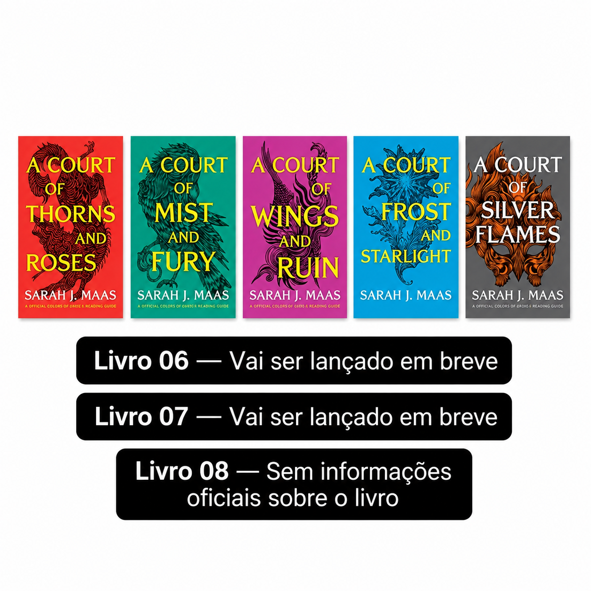

Meu primeiro post
Por: Pietra Dall Anora Galvão
Boas-Vindas ao Reading With Me! Aqui eu irei compartilhar recomendações de livros de todos os tipos e gêneros, e te ajudar a achar sua próxima jornada de leitura. :)
vou te ajudar a achar sua próxima leitura! Compartilhando recomendações de livros e as suas resenhas com você.
Por: Pietra Dall Anora Galvão
Boas-Vindas ao Reading With Me! Aqui eu irei compartilhar recomendações de livros de todos os tipos e gêneros, e te ajudar a achar sua próxima jornada de leitura. :)

É uma ótima indicação para quem ama romantasia (romance e fantasia). A série "A Court of Thorns and Roses" (ACOTAR) se passa em um mundo de fantasia repleto de faes (seres mágicos), dividido em cortes e regiões distintas, cada uma com suas próprias regras, política e hierarquia. A história acompanha Feyre Archeron, uma jovem humana que se envolve com esses seres e descobre segredos, perigos e romances intensos. O enredo combina fantasia, ação, suspense e romance,com foco em crescimento pessoal e relacionamentos complexos.